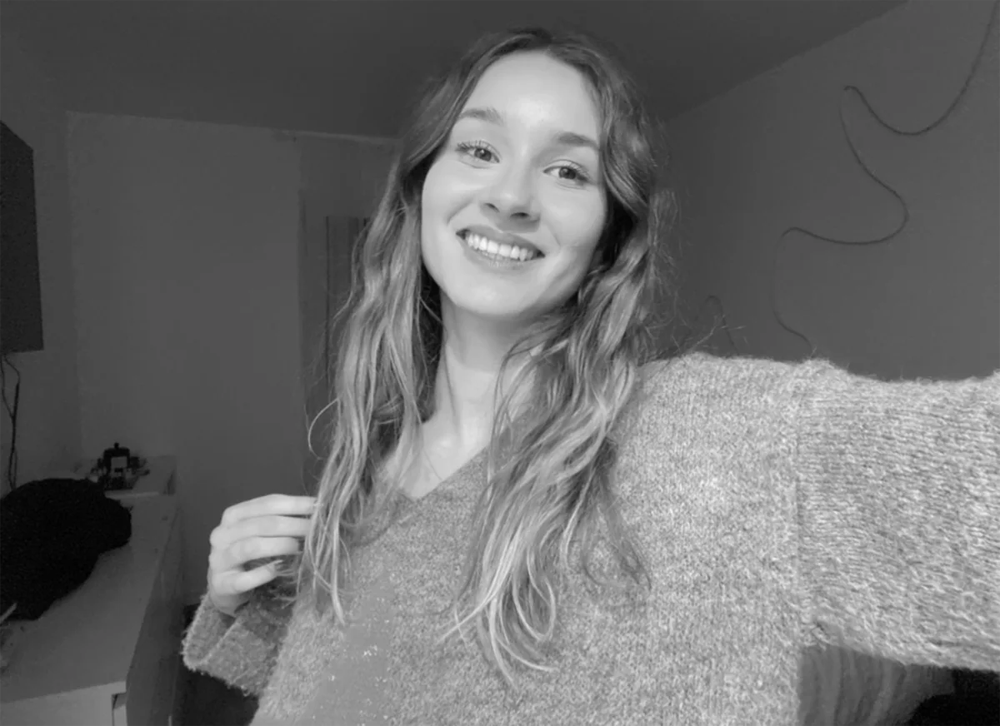

à propos
En deuxième année de DN MADE mention Événement, spécialité Dispositifs de communication éphémère, je suis à la recherche d’une entreprise dans laquelle je pourrais mettre à profit mon savoir-faire à l’occasion d’un stage du 5 avril au 12 juillet 2027.
Curieuse et créative, j’aime travailler sur des projets variés et développer ma polyvalence au fil de mes expériences. Je mène également un travail personnel en parallèle de mes projets professionnels, à travers différentes pratiques créatives. Ce portfolio rassemble mes différents projets, mes compétences et mon univers graphique.
Formations
DN MADE, Diplôme National des Métiers d’Art et du Design
Lycée Georges Brassens, Évry-Courcouronnes, 2025-2028. Deuxième année en cours. Mention Évènement, spécialité Graphisme.
Innovation, questions sociales et environnementales, démarches de projets et travail en équipe.
Bac Pro Communication Visuelle PluriMédia
Lycée Claude Nicolas Ledoux, Vincennes, 2022-2025
Développement d’une démarche créative et méthodique, de la recherche d’idées à leur traduction en solutions graphiques adaptées aux différents projets de communication visuelle.
Expériences professionnelles
Création et animation d’un évènement
Place de l’Agora, 2 octobre 2025
Imaginer et concevoir différentes idées et adapter mes choix graphiques au sein de travaux d’équipe.
Conception d’un design d’innovation sociale
Évry-Courcouronnes, 2025-2026
Travail d’équipe : transformer un évènement dans l’espace et à travers le graphisme. Projet « Ô Marmites du Monde ».
Stage de communication, Mairie de Brunoy
Graphisme, journalisme, 1 mois, juin 2024
Participation à la réalisation du journal municipal mensuel à travers la rédaction et la mise en forme de contenus, la réalisation d’interviews, la création graphique et la conception d’animations.
Imprimerie, création d’enseignes visuelles
SIEE, Le Perreux-sur-Marne, décembre 2024
Découverte des différentes techniques d’impression, de la préparation des fichiers à la production finale.
Temps libre et créations
Objets éditoriaux variés : brochures et fanzines graphiques, livrets photos.
Peintures sur toile en autodidacte (peintures détaillées).
Accessoires et pièces vestimentaires en crochet.
Logiciels
- Illustrator
- Photoshop
- InDesign
- CapCut
- Canva
- Miro
Qualités
- Organisée
- Créative
- Ambitieuse
- Sens du détail
- Persévérante
- Esprit d’équipe
Langues
- Portugais, B1
- Espagnol, A2
- Anglais, B1